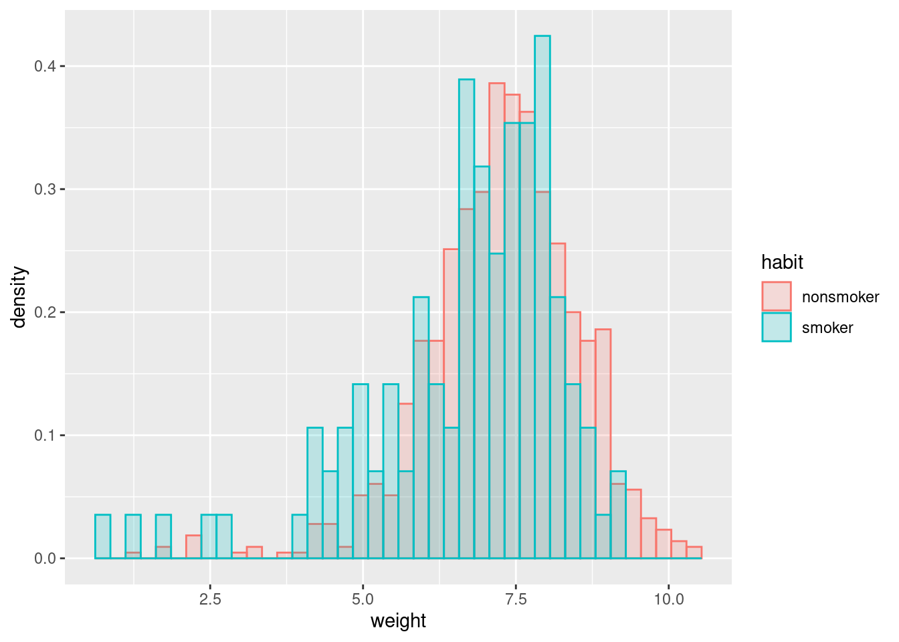
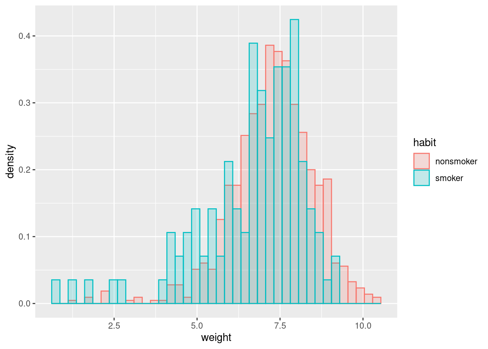
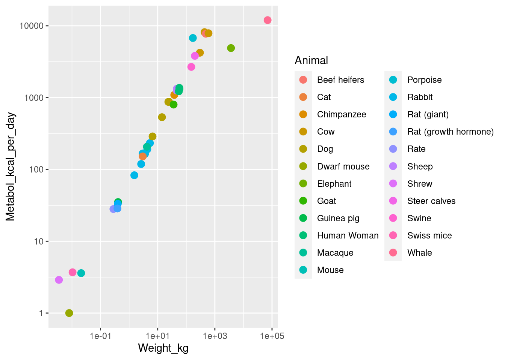

Warning: The dot-dot notation (`..density..`) was deprecated in ggplot2 3.4.0.
ℹ Please use `after_stat(density)` instead.
Recall our births dataset, which contains observational data on many aspects of a pregancy, including whether the mother was a smoker. Let’s suppose we’re interested in seeing whether there is evidence that smoking affects a baby’s birth weight negatively.
The histograms are suggestive:
Warning: The dot-dot notation (`..density..`) was deprecated in ggplot2 3.4.0.
ℹ Please use `after_stat(density)` instead.
But we might reasonably want to try to control for some of the many additional variables using regression. For instance, we might run the regression:
lm_inter <- lm(weight ~ mage + habit + (whitemom + sex + visits + gained)^2, births_df)
summary(lm_inter)$coefficients["habitsmoker", "Estimate"][1] -0.6169764That’s a pretty large and negative estimated effect. But we might want to ask a number of critical questions:
To answer these questions, we need some stochastic assumptions.
Suppose we just look at the sample averages for smokers and non–smokers: \(\ybar_{s}\) and \(\ybar_{x}\), respectively. We talked a lot at the beginning about when we might assume that our \(\y_n\) are IID samples from some population of smokers and non–smokers. In that case, note that the \(n\)–th smoker’s weight observation can be written as
\[ \y_{sn} = \expect{\y_{sn}} + (\y_{sn} - \expect{\y_{sn}}) = \mu_s + \res_{sn}, \]
where \(\mu_s = \expect{\y_{sn}}\) is what we want to know, and \(\expect{\res_{sn}} = 0\) by definition! In this case, if \(\z_n\) encodes smoking, we can write
\[ \y_n = \beta_1 + \beta_2 \z_n + \res_{n} \]
with no additional assumptions — there automatically exists \(\beta_1\) and \(\beta_2\) such that this is true, namely
\[ \beta_1 = \mu_x \quad\textrm{and}\quad \beta_2 = \mu_s - \mu_x. \]
Furthermore, we know that \(\betavhat\) is unbiased for these. (Exercise: show this.)
However, the situation becomes more complicated if we want to control for mother’s age (for example). In that case, if we take \(\x_n\) to be mother’s age, write
\[ \y_n = \beta_1 + \beta_2 \z_n + \beta_3 \x_n + \res_n, \]
then it may not be true that \(\expect{\res_n} = 0\) from IID sampling alone. For example, suppose that, actually, \(\y_n = \gamma \x_n^2 + \eta_n\), for \(\expect{\eta_n} = 0\). Then we can plug in and see that (taking the regressors as fixed, and not random):
\[ \expect{\res_n} = \expect{\y_n - \beta_1 + \beta_2 \z_n + \beta_3 \x_n} = \expect{\gamma \x_n^2 - \beta_1 + \beta_2 \z_n + \beta_3 \x_n} \ne 0, \]
in general.
What we’ve just done is an example of sequence of steps we’ll be following a lot:
We can do this in order to: - Gain intuition about linear regression that we hope extends to other models, - Falsify the assumed model, - Explore patterns in the data, - Attempt to assess the prediction accuracy, - … and so on.
Typically our assumptions may be falsifiable, but they are often not verifiable. They have to be critically examined, and are a central part of any argument made using regression.
In the next six weeks, we will explore a hierarchy of assumptions. Typically, the more assume, the more precise you can be about the behavior of linear regression!
The loosest assumption is that \((\xv_n, \y_n)\) are IID pairs.
Assume that the pairs \((\x_n, \y_n)\) are IID, and that both \(\expect{\y_n \vert \x_n}\) and \(\var{\y_n \vert \x_n}\) are finite.
This is similar to a “machine learning” style assumption, where we don’t assume much about the relationship between \(\x_n\) and \(\y_n\), but want to predict \(\expect{\y_n \vert \xv_n}\) with some flexible learning algorithm — which could be linear regression.
The next strongest assumption is this:
Under the IID data assumption, assume additionally that there exists a \(\betav\) such that, for all \(\xv_n\), \(\expect{\y_n \vert \xv_n} = \betav^\trans \xv_n\). Equivalently, we can write \(\expect{\Y \vert \X} = \X \betav\).
This is a strong assumption! It is unlikely to be actually true in most practical settings. However, something like this is necessary if we’re to evaluate how well OLS recovers a “true” \(\betav\).
Under this assumption, we can always define
\[ \res_n = \y_n - \betav^\trans \xv_n = \y_n - \expect{\y_n \vert \xv_n}, \]
which must satisfy
\[ \expect{\res_n \vert \xv_n} = 0 \quad\Rightarrow\quad \expect{\res_n} = \expect{\expect{\res_n \vert \xv_n}} = 0, \]
this is equivalent to saying that there exists \(\betav\) such that \(\y_n = \betav^\trans \xv_n + \res_n\) with \(\expect{\res_n \vert \xv_n} = 0\).
Since this assumption allows \(\var{\res_n \vert \xv_n}\) to vary with \(\xv_n\), the residuals are sometimes called “heteroskedastic,” meaning “different randomness,” in contrast with the next assumption.
Amazingly, the LE assumption is enough to prove the unbiasedness of OLS under correct specification. Here is a proof:
\[ \begin{aligned} \betavhat ={}& (\X^\trans \X)^{-1} \X^\trans \Y \\={}& (\X^\trans \X)^{-1} \X^\trans (\X \betav + \resv) \\={}& (\X^\trans \X)^{-1} \X^\trans \X \betav + (\X^\trans \X)^{-1} \X^\trans \resv \\={}& \betav + (\X^\trans \X)^{-1} \X^\trans \resv \quad\Rightarrow\\ \expect{\betavhat \vert \X} ={}& \betav + (\X^\trans \X)^{-1} \X^\trans \expect{\resv \vert \X} ={} \betav \quad\Rightarrow\\ \expect{\betavhat} ={}& \expect{\expect{\betavhat \vert \X}} = \betav. \end{aligned} \]
The LE assumption also helps make it clear what happens when you fail to include variables which you should have included.
Suppose that the true model is \(\Y = \X \betav + \Z \gammav + \resv\) under the LE assumption, but we run the regression \(\Y \sim \Z \alphav\). How different is \(\alphavhat\) from the true \(\gammav\)?
We can repeat the steps above to get
\[ \begin{aligned} \alphavhat ={}& (\Z^\trans \Z)^{-1} \Z^\trans \Y \\={}& (\Z^\trans \Z)^{-1} \Z^\trans (\X \betav + \Z \gammav + \resv) \\={}& \gammav + (\Z^\trans \Z)^{-1} \Z^\trans \X \betav + (\Z^\trans \Z)^{-1} \Z^\trans \resv \quad\Rightarrow\\ \expect{\alphavhat \vert \X, \Z} ={}& \gammav + (\Z^\trans \Z)^{-1} \Z^\trans \X \betav. \end{aligned} \]
We see that \(\alphahat\) is biased as an estimator of \(\gammav\) unless either \(\Z^\trans \X \betav = \zerov\). This term can be zero in two ways:
One way to think about the \(\Z^\trans \X = \zerov\) case is as follows: you could incorporate \(\X \betav\) into a new residual, \(\etav = \resv + \X \betav\) in the model \(\Y = \Z \alpha + \etav\). It is no longer the case that \(\expect{\etav | \Z}\) is zero, but it is uncorrelated with \(\Z\), and so has no effect on the regression. This is an instance where it’s more useful to analyze OLS using the assumption that errors are uncorrelated rather than independent.
The next assumption is more common in econometrics, and it simply assumes that the residuals all have the same variance.
Under the linear expectation assumption, assume additionally that \(\var{\res_n \vert \xv_n} = \sigma_\res^2\) for all \(\xv_n\); that is, the residual variance is constant.
Such residuals are called “homoskedastic” for “same randomness.”
The homoskedastic residuals assumption leads to a particularly simple form for the covariance of \(\betavhat\), which is more complicated under heteroskedasticity. Using our result above,
\[ \begin{aligned} \cov{\betavhat \vert \X} ={}& \expect{\left( \betavhat - \betav\right) \left( \betavhat - \betav\right)^\trans \vert \X} \\={}& \expect{\left( (\X^\trans \X)^{-1} \X^\trans \resv \right) \left( (\X^\trans \X)^{-1} \X^\trans \resv \right)^\trans \vert \X} \\={}& (\X^\trans \X)^{-1} \X^\trans \expect{\resv \resv^\trans \vert \X} \X (\X^\trans \X)^{-1} \\={}& (\X^\trans \X)^{-1} \X^\trans \sigma^2_\res \id \X (\X^\trans \X)^{-1} \\={}& \sigma^2_\res (\X^\trans \X)^{-1} \X^\trans \id \X (\X^\trans \X)^{-1} \\={}& \sigma^2_\res (\X^\trans \X)^{-1}. \end{aligned} \]
Unlike the expectation, it is no longer the case that \(\cov{\betavhat}\) has a simple form marginally over \(\X\), because, in general,
\[ \expect{(\X^\trans \X)^{-1}} \ne \expect{\X^\trans \X}^{-1}. \]
A simple special case is for univarite \(\x_n\), for which it is hopefull familiar that
\[ \expect{\frac{1}{\x_n^2}} \ne \frac{1}{\expect{\x_n^2}} \]
unless \(\var{\x_n} = 0\). This is one of the “mathematical conveniences” that motivate treating \(\xv_n\) as fixed rather than random when analyzing OLS — see below for more discussion.
Finally, we come to the most classic assumption: fully Gaussian residuals.
Under the linear expectation assumption, assume additionally that \(\res_n \sim \gauss{0, \sigma^2}\).
This assumption is, of course, the least likely to hold in practice. However, it’s also the easiest to analyze — we’ll be able to derive closed–form expressions for the behavior of many OLS test statistics. This is also the assumption that is made implicitly by a lot of standard statistical software, including the lm function from R, so it is important to understand its implications.
Under the Gaussian assumption, since \(\y_n = \betav^\trans \xv_n + \res_n\), this implies that \(\y_n\) is also Gaussian conditional on \(\xv_n\). Even more, \(\betavhat\) is Gaussian conditional on \(\X\), since it is itself a linear combination of Gaussian errors:
\[ \betavhat = \beta + (\X^\trans \X) \X^\trans \resv \quad\Rightarrow\quad \betavhat \sim \gauss{\beta, \sigma^2 (\X^\trans \X)^{-1}}. \]
Above, it’s clear that \(\y_n\) is considered random (and, correspondingly, so are the residuals \(\res_n\)). What about \(\xv_n\) for the linear expectation assumption onwards? Is it random or fixed?
Depending on the setting, it might be reasonable to model \(\xv_n\) as either random or fixed. For example, if \(\xv_n\) are part of a systematic design, such as an evenly spaced set of weights for which you will measure the deflection of a spring, then it makes sense to think of \(\xv_n\) as fixed. However, if your data are samples from some larger population, such as data about mothers’ smoking habits and baby birth weight, then it might make sense to think of \(\xv_n\) as random along with \(\y_n\).
However, mathematically speaking,
For these reasons, I will make the following assumption for simplicity:
Under the linear expectation, homoskedastic, and Gaussian assumptions, I will assume that the regressors \(\X\) are fixed unless I say explicitly otherwise. In that case, by conditioning, I simply mean “for that value of \(\xv_n\),” as in \(\expect{\y_n \vert \xv_n} = \betav^\trans \xv_n\).

Recall the Kleiber example, in which observations were animals, weights, and metabolism rates. Which of these assumptions make sense?
Arguably, none of them:
The best you might hope for is to argue that the IID assumption characterizes something like “how much would my conclusion have changed if I had collected the same dataset again but with different randomly chosen animals of the same species?” But this is not very much like the real question, which is “how much might the slope of the regression line differ from 2/3 due only to the ideosyncracies of this particular dataset?”